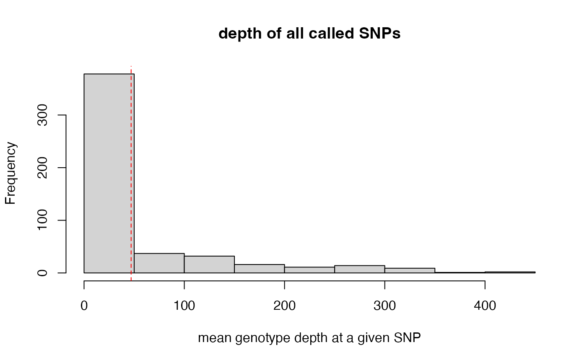
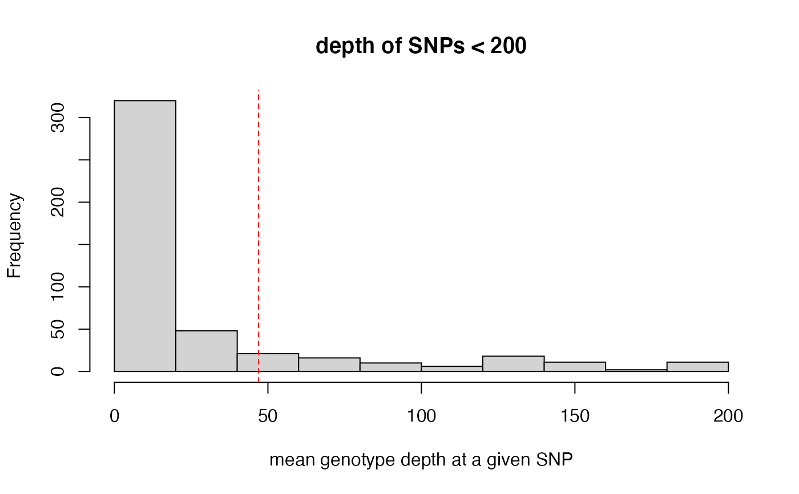
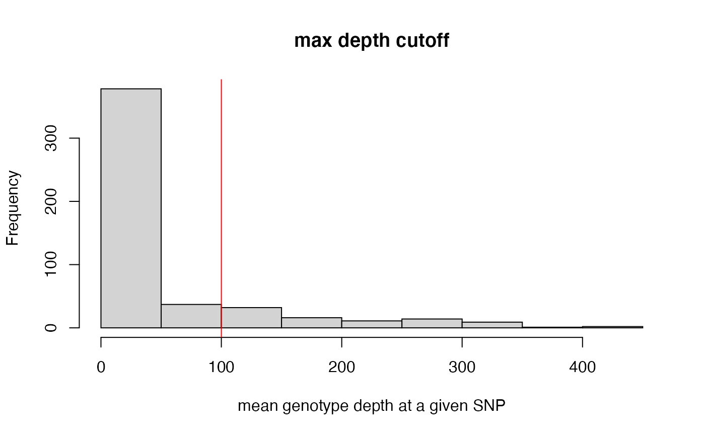

max_depth.RdThis function can be run in two ways: 1) specify vcfR object only. This will visualize the distribution of mean depth per sample across all SNPs in your vcf file, and will not alter your vcf file. 2) specify vcfR object, and set 'maxdepth' = 'integer value'. This option will show you where your specified cutoff falls in the distribution of SNP depth, and remove all SNPs with a mean depth above the specified threshold from the vcf. Super high depth loci are likely multiple loci stuck together into a single paralogous locus. Note: This function filters on a 'per SNP' basis rather than a 'per genotype' basis, otherwise it would disproportionately remove genotypes from our deepest sequenced samples (because sequencing depth is so variable between samples).
max_depth(vcfR, maxdepth = NULL)a vcfR object
an integer specifying the maximum mean depth for a SNP to be retained
The vcfR object input, with SNPs above the 'maxdepth' cutoff removed
max_depth(vcfR = SNPfiltR::vcfR.example)
#> cutoff is not specified, exploratory visualization will be generated.

#> dashed line indicates a mean depth across all SNPs of 47

max_depth(vcfR = SNPfiltR::vcfR.example, maxdepth = 100)
#> maxdepth cutoff is specified, filtered vcfR object will be returned
#> 17% of SNPs were above a mean depth of 100 and were removed from the vcf

#> ***** Object of Class vcfR *****
#> 20 samples
#> 1 CHROMs
#> 415 variants
#> Object size: 0.5 Mb
#> 44.22 percent missing data
#> ***** ***** *****